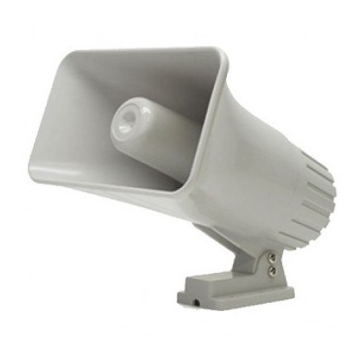
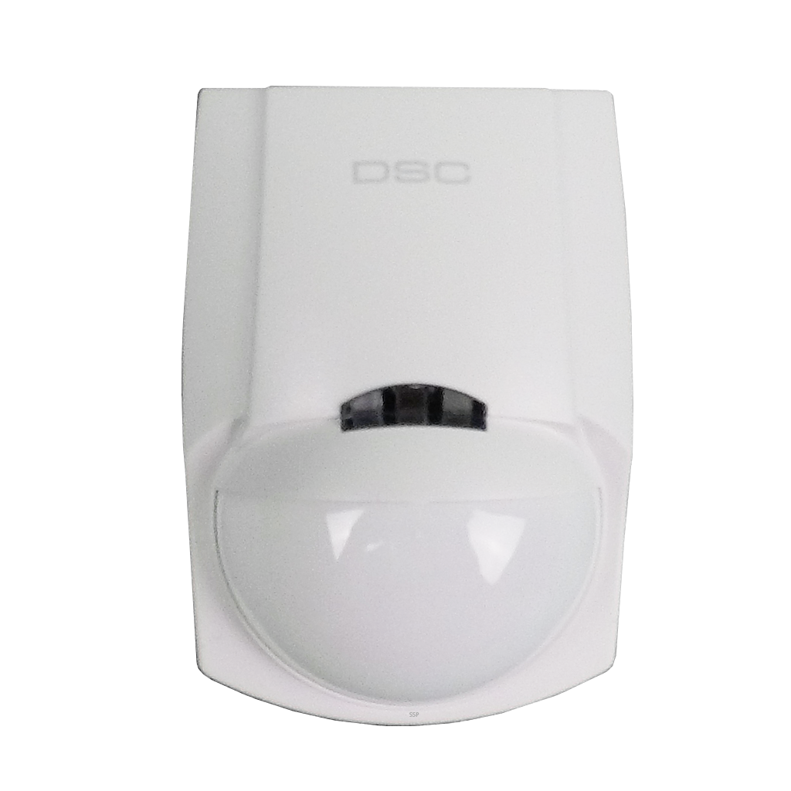
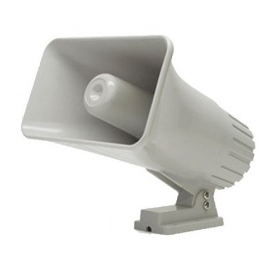
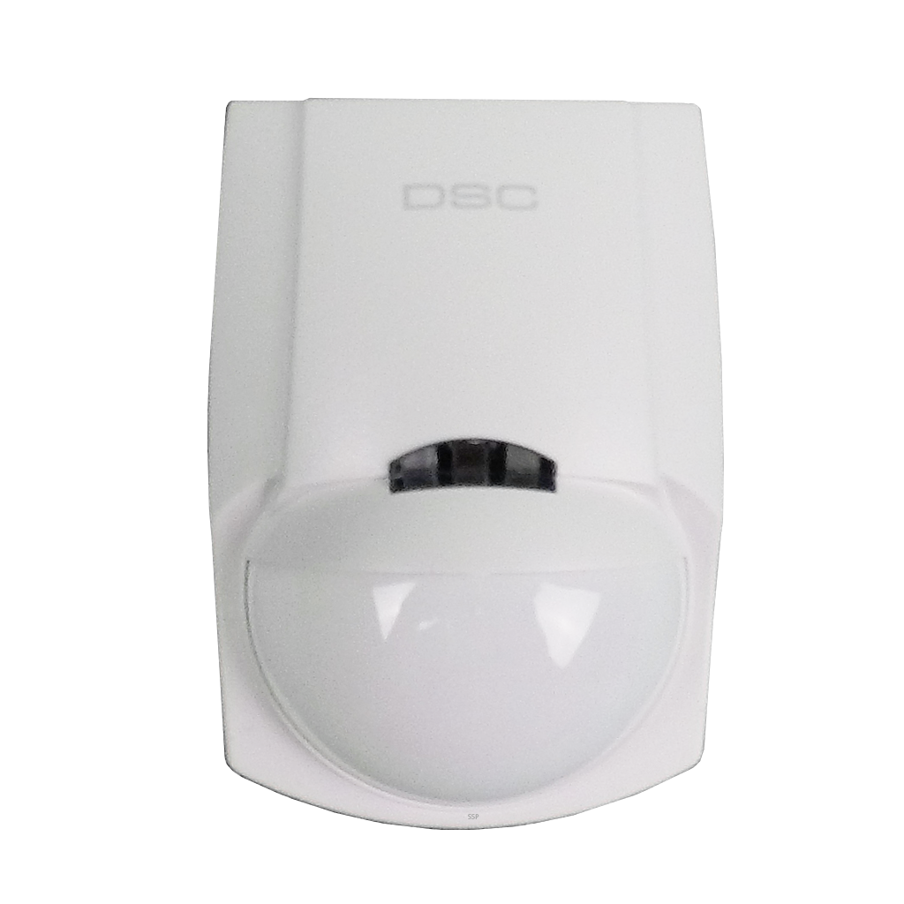

Componentes de alarma
Un sistema de alarma, independientemente de si es inalámbrico o cableado, tiene la misma configuración básica.
- El panel de control
El panel de control es el corazón electrónico de un sistema de seguridad. Todos los componentes de la alarma están conectados (de forma inalámbrica o por cables) al panel de control y es el panel de control el que interpreta las señales recibidas de los sensores y otros dispositivos.
La alarma debe estar activada para que el panel de control pueda recibir señales en caso de que se active una alarma. Si la alarma está desarmada el edificio no está protegido.
El panel de control seguirá recibiendo señales como la advertencia de batería baja de un sensor, las alertas de manipulación indebida o las advertencias de batería baja, incluso cuando el sistema no está armado.
Si se monitorea la alarma, el panel de control enviará automáticamente señales a la compañía de monitoreo cuando la alarma esté activada. Si el sistema se monitoriza automáticamente, el panel de control enviará automáticamente un texto a través de un módem celular incorporado en caso de una activación.
- Sensores
Todas las alarmas incluirán uno o más sensores que detectan posibles intrusiones. Los diferentes sensores están diseñados para activarse de diferentes maneras, incluso cuando detectan calor, movimiento del cuerpo o movimiento del aire (ondas de choque) o se interrumpen los rayos que emiten. Éstos incluyen:
Los sensores PIR (en la imagen) detectan el calor y el movimiento del cuerpo y son el tipo más común de sensor de alarma. Se utilizan en cuartos internos o áreas del edificio.
Los interruptores de puertas y ventanas monitorean el perímetro del edificio al dar una notificación instantánea si alguien intenta entrar.
Los detectores de humo están activos incluso cuando la alarma no está activada y puede ser una adición valiosa para un sistema de seguridad.
Las alarmas básicas tendrán un sensor incorporado, pero la mayoría de los modelos de alarma incluyen una serie de sensores con la opción de agregar sensores adicionales para habitaciones o áreas adicionales.
- Sirena
Muchas, pero no todas las alarmas incluyen una sirena que hará ruido en caso de que se dispare una alarma para ayudar a llamar la atención sobre una posible intrusión.
Estos pueden montarse en el exterior de un edificio para atraer la atención, o en el interior para repeler a los intrusos.


 


